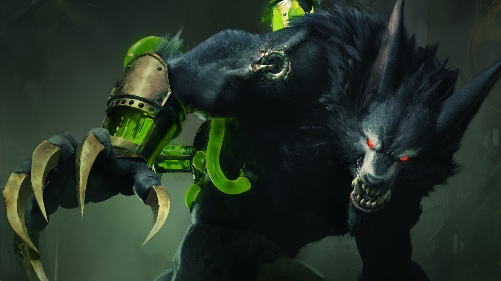

Warwick
A ira desimpedida de Zaun
Warwick é um monstro que assombra os becos cinzentos de Zaun. Transformado por mórbidos experimentos, seu corpo é enxertado com um intricado sistema de câmaras e bombas, um maquinário que preenche suas veias com uma ira alquímica. À espreita nas sombras, ele caça os criminosos que aterrorizam o submundo da cidade. Warwick fica enfurecido quando sente o cheiro de sangue. Ninguém que o derrama consegue escapar.
